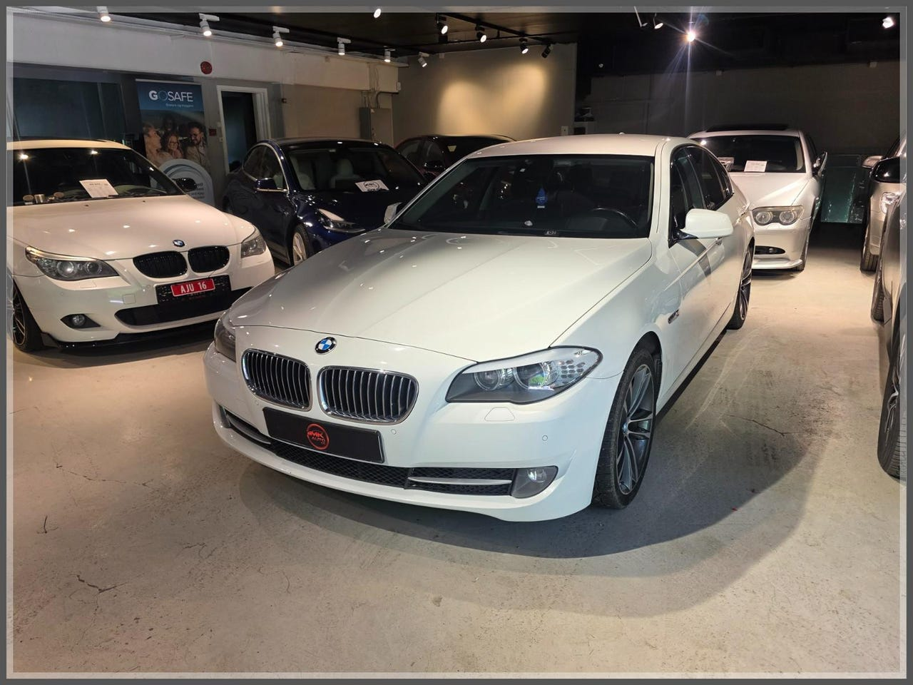

DieselBeskrivelse
SOMMER er her og vi har fått inn en knall fin BMW 520D som vi selger for vår kunde.
BMW F10 520d Sports automat fra 2010 med en 2.0 liters dieselmotor og 8-trinns automatgir noe av det mest populære hos BMW.
Her har du mulighet til å en tøff som blir lagt merke til i lav pris sammenlignet med andre merker.
F10-generasjonen er kjent for å være en av BMWs mest komfortable og elegante 5-serier, med premium følelse i hele bilen.
Her får du en sporty og drivstoff gjerrig sedan som kombinerer luksus, solid støydemping, svært gode langtur egenskaper og kjøreglede.
F10 er desidert den mest tidløse 5-seriene BMW har laget som fortsatt har svært høy standard sammenlignet med nyere biler.
Ta kontakt for en hyggelig bil prat og vi skal være behjelpelig med å lage ett godt og uforpliktet kjøpstilbud til deg.
VELKOMMEN TIL M.K Auto AS
- AUTOREG-** Godkjent av Statens Vegvesen som Autoreg-forhandler, bilen kan derfor omregistreres og leveres samme dag.
- HEFTELSER -** Vi garanterer sletting av eventuelle heftelser før levering.
- INFO -
Kontroller spam og søppelpost på mailen deres.
Legg gjerne også telefonnummeret ved henvendelsen så tar vi kontakt.
- FINANSIERING** -
Gjennom våre samarbeidspartnere kan vi være behjelpelige med å ordne gunstig finansiering med inntil 10 års nedbetaling.
- FORSIKRING -
Vi kan tilby deg en gunstig forsikring på din neste bil. Gjennom oss kan du få tilgang til rabatterte priser hos Gjensidige Forsikring, IF, Enter Forsikring og tryg forsikring. På mange modeller tilbys også dekning for motor/girkasse/drivverk, gratis leiebil og fri veihjelp/rute skift.
Vi forsikrer bilen din mens du venter, og du kan trygt kjøre hjem i din neste bil
- INNBYTTE -VI KJØPER GJERNE DIN BIL:** Som kunde hos MK Auto vil du alltid få en uforpliktende innbytte tilbud på din nåværende bil:
Har du en bil du ikke får solgt eller ikke ønsker å selge selv, kontakt oss så kan vi gi deg et tilbud på å kjøpe den av deg.
Ved innbytte ta med følgende i mail til oss:
\\* Reg nr.
\\* Km.stand.
\\* Relevant ekstrautstyr
\\* Girtype
\\* Bilder av bilen
- TRANSPORT & HENTESERVICE -** Har du ikke mulighet til å hente bil selv? Dette ordner vi, spør oss om tilbud!
Kommer du med fly? blir nærmeste flyplass Oslo Lufthavn(Gardemoen)
Her er vi selvfølgelige behjelpelige med å hente deg.
Vi driver en butikk hvor vi er avhengige av å utnytte plassen inne så godt som mulig. Ta kontakt med oss før du tar turen innom slik at bilen du ønsker å se på står klar.
Vi tar forbehold om eventuelle trykkfeil og andre feil ( f.eks i utstyrsliste ) i våre annonser.
- O U T L E T -** VÅRE BILER SOM ER ANNONSERT SOM OUTLET, HAR VI DESSVERRE LITE KUNNSKAP OM.
DERFOR SELGES BILER UTEN GARANTI DA MANGLER KAN FOREMKOMME ELLER FORELIGGE.
VI ANBEFALER ALLE OM Å GJØRE SEG KJENT MED BILEN, FØR AVTALE BLIR INNGÅTT!
- INFO -
Skadene/manglene på våre biler har ikke innvirkning på kjøring eller sikkerhet. Vi foretar ikke tilstandskontroll på bilene, og kjenner dermed ikke til andre mangler utover de som nevnes i annonsen. Vi anbefaler på generelt grunnlag at du går for en nyere bil hvis du ser for deg et vedlikeholdsfritt bilhold. Eldre biler vil være mer utsatt for reparasjons- og vedlikeholdsbehov
Vis hele beskrivelsen
Spesifikasjoner
Utstyr
- ABS-bremser
- Airbag bak side
- Airbag foran
- Airbag foran side
- Airbag gardiner
- Alarm
- Antiskrens
- Antispinn
- AUX tilkobling
- Beltevarsler
- Bi-xenon
- Bluetooth
- CD-spiller
- CD-veksler
- Cruisekontroll
- Cruisekontroll adaptive
- Delskinn
- Diesel-partikkelfilter
- Diff.sperre
- Ekstra mørktonede vinduer bak
- El.vinduer
- Elektrisk sete m. memory
- Elektriske speil
- Fabrikkmontert alarm
- Farget glass
- Fjernstyrt sentrallås
- Handsfree opplegg
- Head-up display
- Helårsdekk uten felg
- Isofix
- Keyless go
- Kjørecomputer
- Klimaanlegg
- Klimaanlegg 2-soner
- Lakkerte utvendige speil
- Manuelt klimaanlegg
- Metallic lakk
- Multifunksjonsratt
- Navigasjonssystem
- Nivåregulering
- Oppvarmede seter, foran
- Original telefon
- Parkeringsensor bak
- Parkeringsensor foran
- Radio DAB+
- Radio FM
- Regnsensor
- Regulerbart ratt
- SD CARD
- Sentrallås
- Servostyring
- Sete multifunktion
- Seter nedfellbare bak
- Skinninteriør
- Skinnratt
- Sommerdekk på aluminiumsfelg
- Sommerdekk på felg
- Speil innfellbare
- Startsperre
- Tiptronic
- Turteller
- TV-skjerm
- Tåkelys
- Varmedempende glass
- Vinterdekk på aluminiumsfelg
- Vinterdekk på felg
- Xenonlys
Vil du se den i virkeligheten?
Kom innom Økern for en titt og en prøvekjøring, eller ta kontakt så finner vi et tidspunkt.